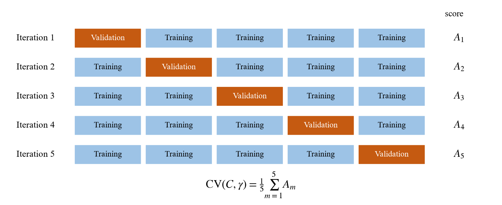

07 · The mathematics
Scaling, tuning and metrics
Sections 3.4, 3.6 and 3.7: how the data are prepared, how \(C\) and \(\gamma\) are chosen, and how performance is measured.
In plain words
Scaling. MQ8's numbers swing three times more than MQ6's. Without rescaling, the RBF kernel would mostly listen to MQ8. So every sensor is shifted and stretched to mean 0 and spread 1.
Tuning. The SVM has two dials, \(C\) and \(\gamma\). You tried 42 combinations. For each one, the training data were cut into five pieces; the model learned on four and was tested on the fifth, five times over, and the scores were averaged. The best pair was \(C=100\), \(\gamma=10\).
Measuring. Accuracy alone is not enough for safety. Recall asks "did we catch every leak?" and precision asks "can we trust the alarm?" Both are reported for every class.
1 · Standardisation (z-score)
Using the training set only, for each sensor \(j\):
The same \(\mu_j,\sigma_j\) are applied to validation, test and future live readings. Using test data to compute them would leak information, so it is never done. Why it matters for RBF: the kernel uses \(\|\mathbf{x}-\mathbf{z}\|^2=\sum_j(x_j-z_j)^2\), a sum over sensors, so unequal scales would give unequal votes.
2 · Grid search with stratified 5-fold cross-validation
Split the training set into five folds \(\mathcal{D}_1,\dots,\mathcal{D}_5\) with equal class proportions. For each candidate \(\theta=(C,\gamma)\):

| Setting | Values tried |
|---|---|
| \(C\) | 0.1, 1, 10, 100, 1000, 10000 |
| \(\gamma\) | 0.001, 0.01, 0.1, 1, 10, 30, 100 |
| Total | 42 pairs × 5 folds = 210 fits, about 9 minutes on the laptop |
| Winner | \(C=100,\ \gamma=10\), cross-validation accuracy 97.63% |
The scaler sits inside a scikit-learn Pipeline, so it is
re-fitted on each training fold and the validation fold never influences it. The
winner is not on the edge of the grid, so the range was wide enough.
3 · Confusion matrix
\(M_{pq}\) counts readings of true class \(p\) predicted as class \(q\). For class \(p\) treated as "positive":
4 · The metrics
Precision
"When it says Smoke, how often is it really smoke?" Low precision means false alarms.
Recall
"Of all the real smoke, how much did it catch?" Low recall means missed leaks — the dangerous error.
5 · ROC curve and AUC
Slide a threshold \(\tau\) on the predicted probability and plot TPR against FPR. The area under the curve (AUC) is the chance that a random positive reading gets a higher score than a random negative one. 1 is perfect; 0.5 is guessing.
6 · Viewing it as a leak detector
Merge Perfume, Smoke and Mixture into "gas present" and keep NoGas as "no leak":
7 · Latency
Real-time speed is measured as wall-clock time to classify one reading, including scaling, averaged over 500 test readings fed one at a time, as a live sensor stream would.
Say this if asked how you chose C and γ
"By grid search with stratified five-fold cross-validation on the training set only: six values of C and seven of gamma, 42 pairs, 210 fits. Scaling was inside the pipeline so no fold leaked into another. The best pair was C equals 100 and gamma equals 10 at 97.6% cross-validation accuracy, and it was not on the edge of the grid. The test set was used only once, at the end."